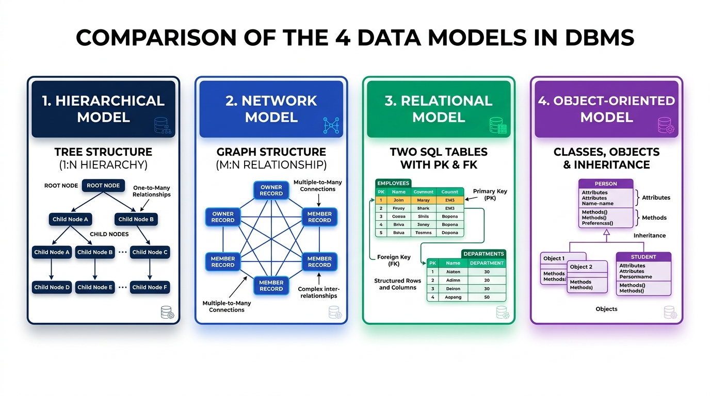

Traditional Data Models in DBMS
Master the 4 fundamental data modeling paradigms: Hierarchical Model (Tree), Network Model (Graph), Relational Model (Tables), and Object-Oriented / Object-Relational Models for IBPS SO IT Officer.
🖼️ Visual Diagram: Comparing the 4 Data Models
The diagram below highlights the structural differences across all four data models:

🌲 2.1 Hierarchical Data Model (Tree Structure)
Developed in the late 1960s, the Hierarchical Model organizes data into a Tree-like structure consisting of parent-child records.
- Root Node: A single top-level record node with no parent.
- Parent-Child Relationship: Parent node can have multiple child nodes, but each child node can have EXACTLY ONE parent node.
- Supported Ratios: Supports 1:1 and 1:N (One-to-Many) relationships only!
- Historical Example: IBM's IMS (Information Management System), created in 1968 for the Apollo moon mission.
Major Limitation: Cannot represent M:N (Many-to-Many) relationships directly without duplicating child records or using complex physical pointers.
🕸️ 2.2 Network Data Model (Graph Structure)
Standardized by the CODASYL DBTG (Conference on Data Systems Languages) committee in 1969, the Network Model organizes data as a Graph structure.
- Owner & Member Records: Relationships are expressed as set types containing Owner Records and Member Records.
- M:N Relationship Support: A child node (Member) can have MULTIPLE parent nodes (Owners)!
- Supported Ratios: Natively supports 1:1, 1:N, and M:N relationships.
Major Limitation: Complex pointer navigation (currency indicators). Any change to the database structure requires modifying low-level application pointers.
📊 2.3 Relational Data Model (Table Structure)
Proposed by Dr. E.F. Codd of IBM in 1970, the Relational Model organizes data in 2-dimensional Tables (Relations) consisting of Rows (Tuples) and Columns (Attributes).
- Tabular View: Data and relationships are represented purely as tables without low-level physical pointers.
- Mathematical Foundation: Built on First-Order Predicate Logic and Set Theory.
- Declarative Querying: Manipulated using standard SQL and Relational Algebra.
- Primary & Foreign Keys: Establishes relationships seamlessly using key values.
🧩 2.4 Object-Oriented (OODBMS) & Object-Relational (ORDBMS) Models
1. Object-Oriented Database Model (OODBMS) 📦
Combines database storage capabilities with Object-Oriented Programming (OOP) concepts:
- Data is stored as Objects containing attributes (state) and methods (behavior).
- Supports Classes, Encapsulation, Inheritance, and Polymorphism.
- Ideal for complex CAD/CAM, GIS mapping, and multimedia applications.
2. Object-Relational Database Model (ORDBMS) 🔀
A hybrid data model that extends standard Relational tables with Object-Oriented capabilities (User-Defined Types, array fields, inherited tables, and stored methods). Examples: PostgreSQL, Oracle Database.
⚖️ Direct Comparison Table: The 4 Data Models
| Feature / Parameter | 🌲 Hierarchical Model | 🕸️ Network Model | 📊 Relational Model | 📦 Object-Oriented Model |
|---|---|---|---|---|
| Underlying Structure | Tree (Root & Children) | Graph (Owner & Member) | 2D Tables (Tuples & Attributes) | Objects, Classes & Methods |
| Supported Relationships | 1:1 and 1:N only | 1:1, 1:N, and M:N | 1:1, 1:N, and M:N (via FK) | 1:1, 1:N, M:N & Inheritance |
| Parent Limit per Child | Exactly ONE parent | Multiple parents | Key references (FKs) | Inheritance hierarchy |
| Query Style | Procedural tree traversal | Procedural pointer navigation | Declarative SQL | Object Query Language (OQL) |
| Major Advantage | Fast 1:N lookups | Flexible M:N modeling | High Data Independence & SQL | Reusability & Complex Types |
| Classic Example | IBM IMS | IDMS, CODASYL DBTG | Oracle, MySQL, SQL Server | ObjectStore, db4o, PostgreSQL |
🎯 IBPS SO IT Officer — Exam Focus & Past PYQ Cues
Q1: IBM's IMS (Information Management System) is an example of which data model?
👉 Answer: Hierarchical Data Model (Tree structure).
Q2: In a Hierarchical Data Model, a child record can have how many parent records?
👉 Answer: Exactly ONE parent record.
Q3: Which data model represents data as a Graph using Owner and Member records?
👉 Answer: Network Data Model (CODASYL).
Q4: Who proposed the Relational Data Model in 1970?
👉 Answer: Dr. E.F. Codd.